New design and layout
The new design focus on simplicity but as well on easier organization of the window. The window can now be docked vertically without wasting space. A new "list" display mode allows to search assets by name much more easily.
Substance 3D Painter 7.2 brings new rendering capabilities with the Adobe Standard Material workflow, new ways of sharing content across Substance 3D applications and an overhauled Assets window.
Release date: 23 June 2021
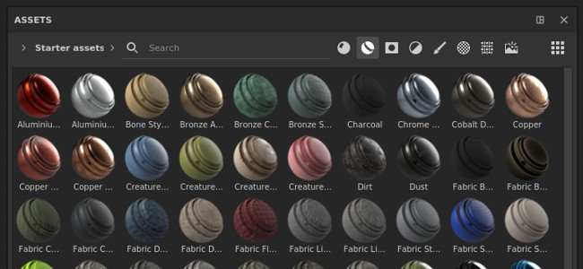
The old Shelf window has been improved and renamed as the Assets window. This redesign focus on making content more quickly accessible and easier to filter with the new dedicated icons. It also comes with an easier navigation system with the breadcrumbs. This redesign also focus on making the experience similar to other Substance 3D software so that managing content across applications is easier.
This release introduces changes in the way we manage the application preferences and the Shelf/Assets content. To know how to migrate your data please take a look a the dedicated page.
New design and layout
The new design focus on simplicity but as well on easier organization of the window. The window can now be docked vertically without wasting space. A new "list" display mode allows to search assets by name much more easily.
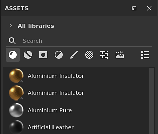
New breadcrumb navigation
Navigation resource can be hard sometimes in a tiny UI. With the breadcrumb is not now easier to jump between folders without having to display the full folder hierarchy.
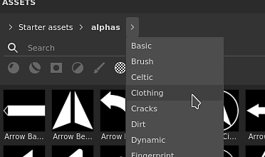
New usage filters
There is a lot of different content in the Assets window and the usages are a good way to filter content isolate specific resources. To select a specific usage simply click on the dedicated button. To add or remove multiple usages, press and maintain CTRL while clicking on a button.
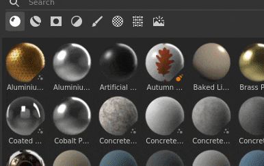
Improved thumbnail rendering
We took the time to rework our thumbnail generation system to improve their quality and make them look more consistent across the the Substance 3D ecosystem. We also added the support of displacement.
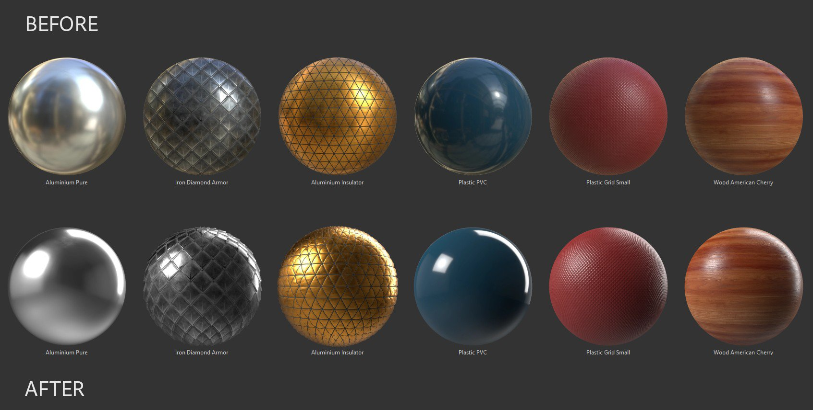
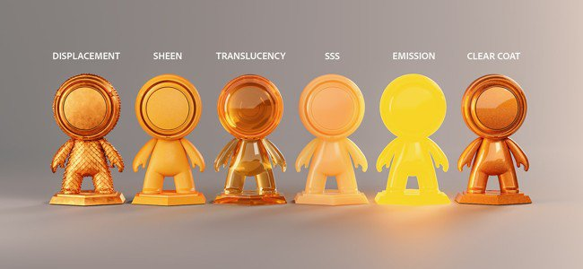
A new shader has been added, named Adobe Standard Material (ASM), which supports several features at once allowing to build more complex and accurate materials within a single Texture Set. With this new shader we also took the opportunity to add new channels to make the creation of materials easier as well.
Improved Texture Set settings
The channel list menu in the Texture Set settings now groups channels base don their compatibility with the current shader. This helps identify which channels will have an effect in the viewport.
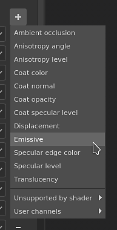
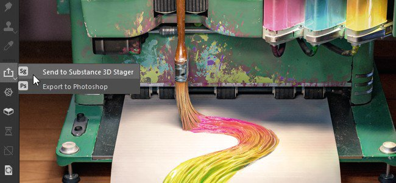
Sending resources and assets between Substance 3D applications is now much easier and accessible in one click with this new workflow. It is now possible to receive Substance files from Substance 3D Designer or Substance 3D Sampler or to send a project into Substance 3D Stager very easily to quickly iterate on content.
This send and receive functionalities are only available through the Creative Cloud Desktop version of the application as it relies on specific technologies to make it possible. This means the Steam or Substance 3D standalone version don't support these features.
New content has been added in this release:
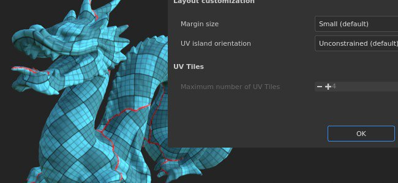
A new update of the automatic UV unwrapping has been added which brings the support of UV Tiles and additional control on the UV generation:
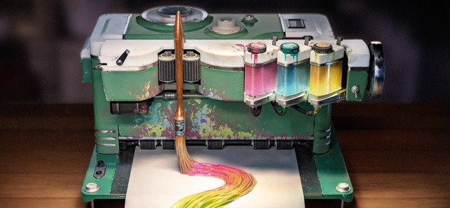
This new version adds several quality of life improvements:
Sharp normal method
There is a new Height to Normal method parameter in the Texture Set settings which allows to control how the Height channel is converted into a normal map. This new parameter is useful to improve the quality of surfaces with lot of varying details, such as fabric materials.
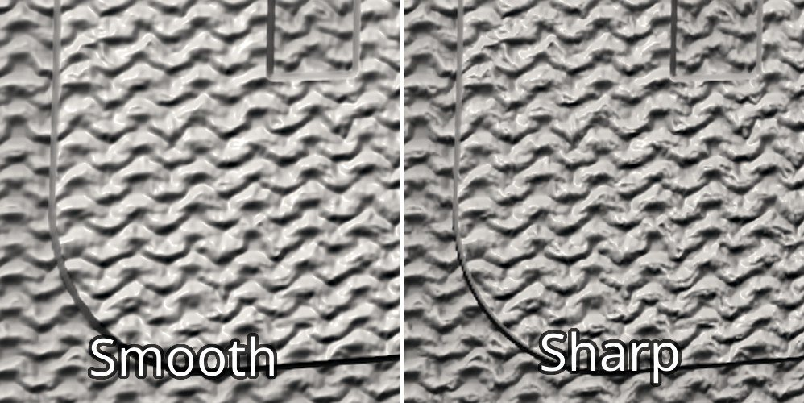
(Released June 23, 2021)
Summary : Major release, it provides an update to the asset panel, a new shader with access to new channels and parameters, an overall refresh of the UI, some much-requested performance improvements, expanded language support, and more!
Added:
Fixed:
Known Issues: